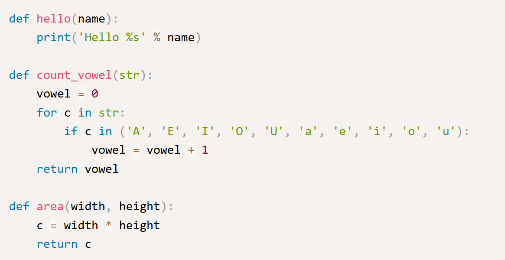
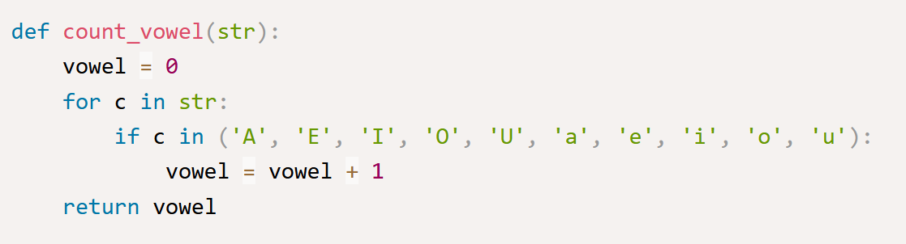

การสร้างฟังก์ชันในภาษา Python
ฟังก์ชัน (Function) คือส่วนของโค้ดหรือโปรแกรมที่ทำงานเพื่อวัตถุประสงค์บางอย่าง ในภาษา Python คุณสามารถสร้างฟังก์ชันของคุณเองเพื่อให้ทำงานที่ต้องการ ในการเขียนโปรแกรมเรามักจะแยกโค้ดที่มีการทำงานเหมือนๆ กันเป็นฟังก์ชันเอาไว้ และเรียกใช้ฟังก์ชันนั้นซ้ำๆ ซึ่งเป็นแนวคิดของการนำโค้ดกลับมาใช้ใหม่ (Code reuse) นี่เป็นรูปแบบของการประกาศฟังก์ชันในภาษา Python
ในรูปแบบของการประกาศฟังก์ชันในภาษา Python นั้นจะใช้คำสั่ง def และหลังจากนั้น function_name เป็นชื่อของฟังก์ชัน และในวงเล็บ () เป็นการกำหนดพารามิเตอร์ของฟังก์ชัน พารามิเตอร์ของฟังก์ชันนั้นสามารถมีจำนวนเท่าไหร่ก็ได้หรือไม่มีก็ได้ และเช่นเดียวกับภาษาอื่นๆ ฟังก์ชันอาจจะมีหรือไม่มีการส่งค่ากลับ สำหรับฟังก์ชันที่ไม่มีการ return ค่ากลับนั้น เรามักจะเรียกว่า โพรซีเยอร์ (Procedure) ต่อไปมาดูตัวอย่างการประกาศและใช้งานฟังก์ชันในภาษา Python
ในตัวอย่าง เราได้สร้างฟังก์ชันจำนวน 3 ฟังก์ชัน ฟังก์ชันแรกมีชื่อว่า hello() เป็นฟังก์ชันสำหรับแสดงข้อความทักทายจากที่ชื่อส่งเข้ามา ฟังก์ชันนี้มีหนึ่งพารามิเตอร์คือ name สำหรับรับชื่อที่ส่งเข้ามาในฟังก์ชัน
ต่อมาฟังก์ชัน count_vowel() เป็นฟังก์ชันสำหรับนับจำนวนสระใน String ฟังก์ชันนี้มีหนึ่ง String พารามิเตอร์ ในการทำงานของฟังก์ชันนั้นเราใช้คำสั่ง For loop ในการวนอ่านค่าทีละตัวอักษรเพื่อตรวจสอบว่าเป็นสระหรือไม่ด้วยคำสั่ง in และตัวแปร vowel นั้นใช้สำหรับนับจำนวนสระที่พบใน String ในตอนท้ายเราได้ส่งค่าของจำนวนสระที่นับได้กลับไปด้วยคำสั่ง return

และฟังกชันสุดท้ายคือฟังก์ชัน area() เป็นฟังก์ชันสำหรับหาพื้นที่ของรูปสี่เหลี่ยมด้านขนาน และฟังก์ชันมีพารามิเตอร์สองตัวสำหรับความกว้างและความยาวของสี่เหลี่ยม และฟังก์ชันทำการ return ผลลัพธ์ที่เป็นพื้นที่กลับไปด้วยคำสั่ง return